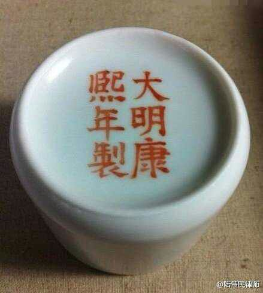

Conversation with 81184027 at Wed 21 May 2014 07:25:42 AM CST on 154115835 (webqq)
(05/20/2014 11:02:16 PM) 福建-福州&水浒: ？？
(05/20/2014 11:02:16 PM) 福建-福州&水浒: ？？
(05/20/2014 11:02:26 PM) 福建-福州&水浒: 都睡了
(05/20/2014 11:03:43 PM) 福建-福州&水浒: 感谢光这个群让我了解了许多真相，自从我纠正爱人与岳母后我成长了许多，
(07:25:43 AM) lost message from #108631 to #108631
(05/20/2014 11:04:29 PM) 福建-福州&水浒: 城管兄
(05/20/2014 11:06:05 PM) 福建-福州&水浒: 我不能发誓要让我最后后一个亲人脱离（基督宗教不允许信徒发誓言），但我一定要让亲人脱离邪教
(05/20/2014 11:07:20 PM) 福建-福州&水浒: 对当权者我真的很失望，唉:pensive:～～～～～～
(05/20/2014 11:25:07 PM) 醒悟: 基督徒不可发誓?
(05/20/2014 11:26:18 PM) 福建-福州&水浒: 基督徒不能发誓
(05/20/2014 11:36:09 PM) 福建-福州&水浒: 十诫中的一条，曾经我自带两条草鱼在饭店里加工，一条加工烤鱼没偷工减料，另一条水煮鱼，明明（我们一行人只吃到半边鱼头）鱼头只有半边，老板非得发誓说没偷工减料，鱼骨为证她还抵赖真的很无语啊，我朋友中有佛教徒也有无神者，
(05/20/2014 11:36:59 PM) 福建-福州&水浒: 一致认定偷工减料为何要说谎呢
(05/21/2014 12:04:37 AM) 湖北-黄冈&雷神: ？？
(05/21/2014 06:27:14 AM) 安徽-市区&钟馗: http://forum.china.com.cn/forum.php?mod=viewthread&tid=3648380&extra=page%3D1%26filter%3Dtypeid%26typeid%3D850%26typeid%3D850
(05/20/2014 11:04:06 PM) 山东-青岛&昆吾: 
(07:26:00 AM) 光: :face14:
(07:34:48 AM) 蔚蓝的天空: 人民是可以万岁的
(07:38:12 AM) 光: (07:11:38 AM) 北大-魏高原: 我始终认为这些腐败分子不能动，而应该被有意识利用起来启动中国的民主，否则政府迟早要后悔滴！
(07:13:49 AM) 行者+首创: 腐败份子不是别人安插的间谍，而是依据制度规定而生的权利寻租者。中国民主的发展无法依靠或利用这些腐败份子。
(07:15:58 AM) 行者+首创: 短短几年，我看着副市长、局长、处长数十人都是非常优秀的人才，昨天还在和我们谈判，今天就进去了，非常可惜！
(07:18:31 AM) 行者+首创: 中国精英在外流、政府专业人才因腐败而丧失，实际上像一个人身上多出流血！
(07:38:41 AM) 蔚蓝的天空: 早
(07:38:25 AM) 光: 早
(07:38:49 AM) 光: 中国的腐败是体制性腐败
(07:39:00 AM) 光: 你要在体制中做事
(07:39:06 AM) 光: 腐败只是必要手段
(07:40:53 AM) 光: 这种教育部的规定，不就是和珅规定的“养廉银”吗？贪官污吏在地方上搜刮百姓，朝廷不但管不了，而且要交给朝廷一部分。这就是说，你如果不去当贪官污吏，连这个给朝廷的养廉银都交不起，实在是浑蛋逻辑。 1949年以前，我们的老清华、老北大，或者西南联大，教授和学生的关系真是情同父子。老师就是盼着学生成才，遇到特别贫困的学生，教授会拿出自己 的薪水来贴补学生。那可真是精心培育，现在却是赤裸裸的金钱利益关系。或者说，学生在教授这里打工几年，给教授赚够了钱，才给你毕业，这就是一种官方合法 的卖学历。 当然，还有很多非法的卖学历。全中国有多少“在职博士”？很多是国企老总、高管。私企老板要不要学历无所谓，但是体制内的人不行，升官要看你的学历。有几个高官不是博士，但是你看他们又有几个人来上过课？ 他们的博士怎么来的？无非是拿钱买的，而且是拿国家的钱买的。他们以国企或政府部门的名义，给教授一个几十万、上百万的项目，做不做得出来无所谓， 这是辛苦费嘛！钱归教授，找点儿发票凑一凑就报销出来了。这样，教授就让其他的学生替这些人上课、考试、写论文，或者干脆“外包”出去。现在已经有了一个 专门的产业链，就是论文代写。价格也不贵，几千块钱一份，还有信誉保证，不通过不收钱。美国一年才出三万多博士，中国现在一年就出五六万博士，世界第一。 这不是活见鬼嘛？十个有九个是假的！
(07:42:05 AM) 光: 合法的腐败和灰色的腐败，做的全都是卖文凭的生意，这就是中国。整个大学教育，乃至研究生的硕士、博士教育就是这个样子。
(07:42:33 AM) 光: 改革开放以来，有人喊出了教育产业化的口号。但是，全世界有靠教育赚钱的吗？教育本身是一项社会公益事业，是以促进社会的发展为目标。西方的名牌大 学，即使很多私立学校，也绝对没有给股东分红的事。私立大学的董事会，都是聘请的社会名流，能够代表公共利益，由他们来决定我们的办学方针是什么，怎么样 才能够最好地服务社会。 现在中国大学变成了一个赚钱的系统，学校领导都是官，分什么副部级的、局级的。这样下来，中国的大学就是两个字的目标：一个是权、一个是钱。钱学森 的“世纪之问”是：“为什么中国的大学里培养不出大师？”靠这样的大学培养什么大师，简直是扯淡。我们的大学已经变成了养猪场，养猪卖钱，完全失去了大学 的精神。
(07:43:16 AM) 光: 我还有一个早年的“海归”朋友，在国内办了十几年的公司，而且很成功。但是，他终于还是带着全家离开了中国。我问他为什么，他的答复是：为了孩子。 他说，我们不是为了让孩子将来成名成家，即使做一个清洁工都可以。但是，要让他做一个好人，做一个快乐的人。经过几年的努力，我们发现，这在国内的环境里 已经很难了，甚至教给孩子讲真话都不行。小孩子在这样的环境里成长，很容易成为两面派。不要说快乐了，有一个正常的心理状态都难。怎么办呢？没有办法，只 有离开。
(07:43:47 AM) lost message from #108653 to #108653
(07:44:07 AM) 蔚蓝的天空: 早
(07:43:58 AM) 光: http://www.ftchinese.com/story/001045443?full=y
(07:52:34 AM) The account has disconnected and you are no longer in this chat. You will automatically rejoin the chat when the account reconnects.